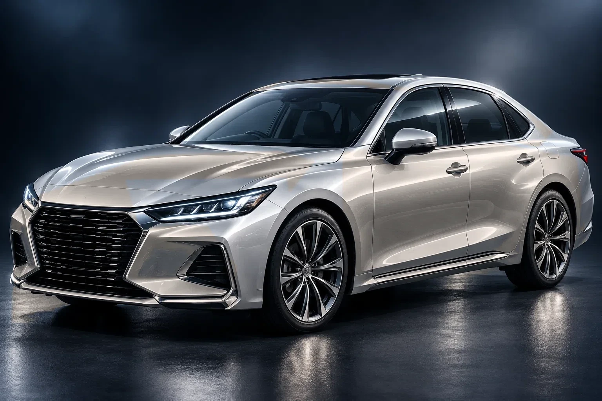

TOUCH THE CAR / DISCOVER THE CARE
愛車の気になる場所から、
できる施工を知る。
① 車種を選ぶ ② 気になる場所を押す ③ 相談メモに追加。
リアガラスは、下の部位名からも確認できます。
気になるところから、施工を相談
CAR TYPE
BODY COLOR
ボディカラーは参考イメージ
◉ 車の部位または光るポイントにカーソルを重ねる
CRYSTAL / SERVICE DETAIL
① 車種を選ぶ ② 気になる場所をタップ ③ 相談メモに追加
TOUCHED PART
お店に相談するときのメモ
車種・色はイメージです。実際の施工範囲・可否・費用は、お車の状態と装備を確認してご案内します。気になるところは、選択したメモと一緒にご相談ください。